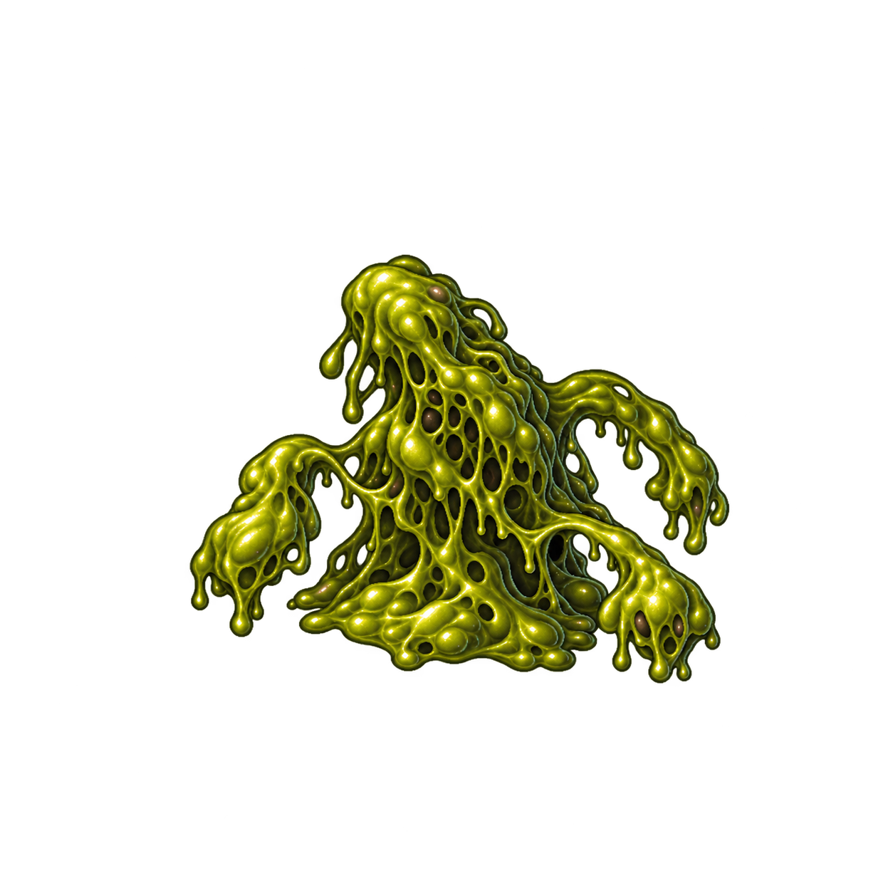
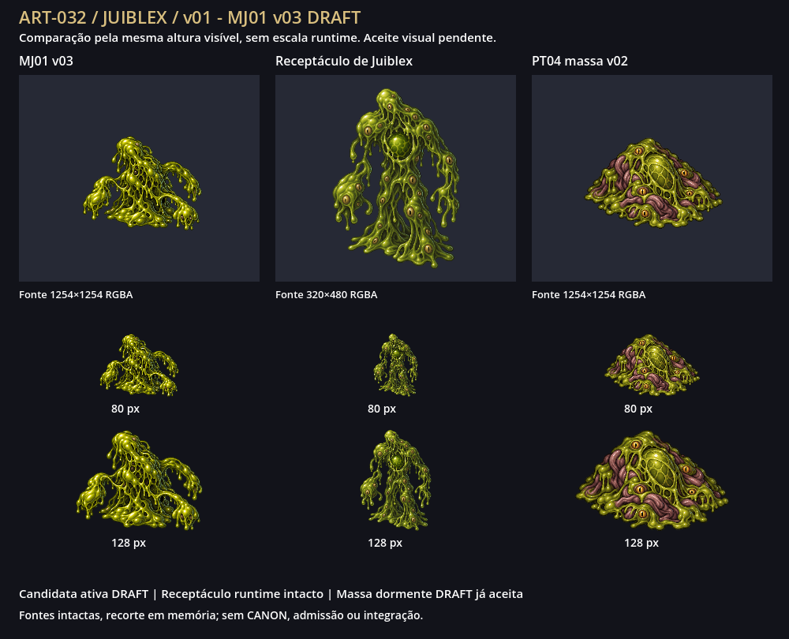
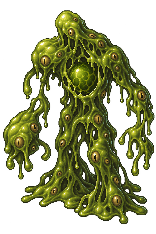

MJ01 v03


Candidata DRAFT visualmente aceita
80 px de altura visível
128 px de altura visível
Fonte 1254×1254 RGBA
O dono respondeu “Aprovo visualmente MJ01 v03” em 2026-10-12. Recibo por revisão/hash. A fonte continua DRAFT; a prancha preserva o estado histórico de entrega antes do aceite.
Fonte nativa 1254×1254 (pedido 1024×1024), intacta. Margem mínima 18,26%, motivo 60,53% da largura e 48,09% da altura; borda exatamente transparente. Três versões preservadas, correções apenas de enquadramento.
Comparação a 80/128px de altura visível: MJ01 candidata ativa, receptáculo humanoide existente e massa dormente PT04 v02 já aceita. Não são tamanhos runtime relativos. Geometria proposta é DRAFT, não anatomia canônica. Avalie filamentos, silhueta, material e distinção dos três estados. A prancha Godot é a referência de leitura; HTML conferido por links/metadados, sem alegar renderização no navegador ou contornar bloqueio conhecido de file://.

Origem/hashes · Auditoria · Prompts efetivos
Carregando seis prévias…

Candidata DRAFT visualmente aceita
Fonte 1254×1254 RGBA

Referência runtime existente — sem alteração
Fonte 320×480 RGBA

DRAFT visualmente aceita — estado dormente
Fonte 1254×1254 RGBA
MJ01 v01 preservada · MJ01 v02 preservada
v01: margem insuficiente. v02: largura visível acima de 70%. Ambas preservadas, não selecionadas. Contraste sobre mapas, animações/pivô e admissão dependem de planos futuros. Aceite visual por revisão tem gate próprio.